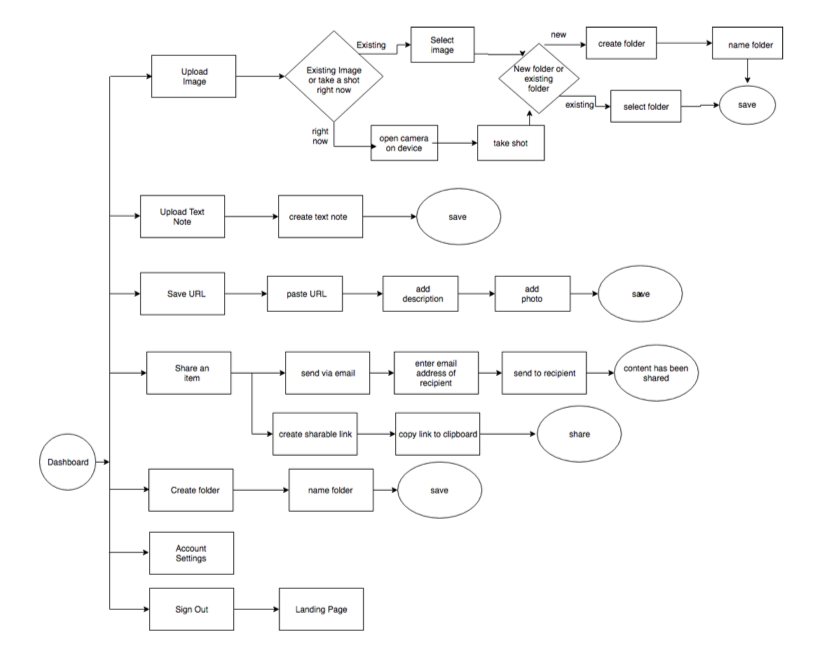

More than just a cloud platform, Den is the easiest way to organize all of your content across your devices.

Den is a SAAS product that is accessible on any device, and is used for uploading content, images and notes as well as sharing content with friends, family or coworkers. It is used as an organizational tool to have one central location for all of your content where you can live whenever you need to access something, share something or add a new photo or favorite link.
Staying organized is a challenge when content is stored with different cloud service providers, and in a world where switching devices moment-to-moment is commonplace, it is vital that content is easily accessible on one single platform.


Introducing Den, a SAAS web application providing effortless content management to solve the problem of content disorganization. Den combines the ease of bookmarking your favorite sites, the flexibility of creating documents or notes, the security of seamless integration across your devices all in one user interface. Organization and seamless syncing, sharing and accessibility is easy with Den.
Whether it's taking notes in a class or sharing photos of your family vacation, Den makes it easy to upload your content anywhere, keep your content organized, and access content quickly and efficiently whenever you need it. Welcome to your Den.
I created a user research survey to diagnose the major pain points and understand better how users interacted with the current cloud platforms on the market. Focuses were:
I summarized the data and identified common user motivations, frustrations, and considerations, including:
The data that I gathered gave me incredible insight, namely that there are a few features that users find most important in their cloud storage app and there are gaps in the cloud market for these features. Users wanted the ability to share content and information easily with others, the ability to upload files (Images, pdf, video) from their mobile device, share a single item or a folder with someone else and vice versa and download items for offline usage. From the data that I gathered in my survey I could already see the beginning of a new organization-based cloud storage platform that would meet users’ needs personally and professionally.
View Full Survey ResultsI created three user personas based on my research. These personas included all of the different data that I had gathered regarding who my audience would be, what their frustrations were and what they wanted to accomplish.


Given the number of existing products on the market, I developed a SWOT analysis of Google Drive, Dropbox and Pinterest to determine where to focus my efforts.

I knew I definitely wanted to analyze Google Drive since it was very favorably ranked in my user survey, and it was most favored when it came to ease of use. Google Drive is a very intuitive platform but fails in a few areas. It appeals primarily to Google users, as you need to have a Google account in order to use it. It also fails to appeal and integrate with Apple devices and with Apple users, and it doesn’t run on Linux whereas Dropbox does.

Dropbox has a lot of appeal in it’s brand and it’s business brand (Dropbox for Business) and is known for being fast and secure. Opportunities lie in it being purely a file storage service and nothing more, it’s very straight forward. It also is expensive and the market is saturated with competitors, and Dropbox does little to set itself apart.

Pinterest was an interesting analysis because it doesn’t quite fit the mold of a cloud platform, but it also doesn’t not fit the mold. There are aspects to Pinterest that are very appealing to users, specifically the design and intuitiveness of use. On the other hand there are limitations in capability and they have a limited audience since it appeals mainly to women. I used Pinterest as a model for the dashboard for Den, since users seem to like the ease of visual organization in the platform.
My next step was creating user stories, where I used the data I had gathered thus far to determine the general direction for my platform. What did users need to accomplish? What were nice-to-haves? What did users want in this platform that frustrated them in other platforms? And lastly, what did a user absolutely need in order for the platform to be functional? I created over 50 user stories that would eventually inspire my user flows. Ranking the stories as low medium and high, I took all of my high priority stories and used those for my MVP.
I created user flows from my user stories, which then helped me to create my sitemap. My user flows included everything that a user would need to accomplish which were created from my user stories. Lastly I created the sitemap which would fine tune the navigation and direction of the product.


I knew I wanted Den to have a homey, down to earth and rooted vibe, so I wanted to go with colors that would be associated with nature and with home. My goal was to find a color palette that would make the smell of pine trees or the sound of the wind blowing through leaves jump off the page. With Den being a place to keep personal treasures and important documents, it was important that I made it cozy yet bold, playful and fun, sparking a feeling of belonging. This inspired the style and direction of the project.

In order to be able to share my initial design ideas with the client, I created wireframes in Balsamiq. This allowed me to put all of my user flows, sitemap and content to work to create something that would eventually become my full-fledged product. My wireframes allowed me to do my first user testing in InVision so that I could fine tune the layout of my pages before creating high fidelity mockups.


My testing results showed that the initial ideas were good, but there needed to be more depth to the content and the sizing and details and placement of CTAs needed to be more deliberate. I took these results into my next phase, which was to create my high fidelity mockups.
I gathered all of my research and ideas and went to work creating Den’s first high-fidelity prototype in Sketch. This was the part when I really got to take all of the personality and capabilities that I wanted Den to have and bring it all to life. I created enough for Den’s MVP, which would include a landing page, a sign up page, a log in page, the dashboard, account settings and storage plan page. Also, in order to give the client an idea what the Den app would look like on mobile, I created a landing page, dashboard and navigation screen on mobile. Once this was complete, I went back to the client to get approval to move forward with more user testing.
I loaded all of my mockups into InVision so that I could perform another series of tests with potential users to ensure that each revision to the design was done to improve usability. I also received feedback from key stakeholders regarding the layout to improve the flow and ensure all content was easily readable as well as accessible to all types of potential users. Final revisions were made once all of the concerns my users brought up were addressed, and the final product on Den was born.
Throughtout this project I learned so much about the design process and most importantly gained so much insight into user needs. Creating Den challenged me to take a very well known platform, cloud storage, and turn it into something different, better and more useful to my audience. I learned the importance of frequent user testing in all stages of the design process. From the very beginning when I started with my user survey, I knew there was a huge opportunity in this space and even though the direction from the client was somewhat vague, my users led me in the direction that I needed to go throughout the entire process.